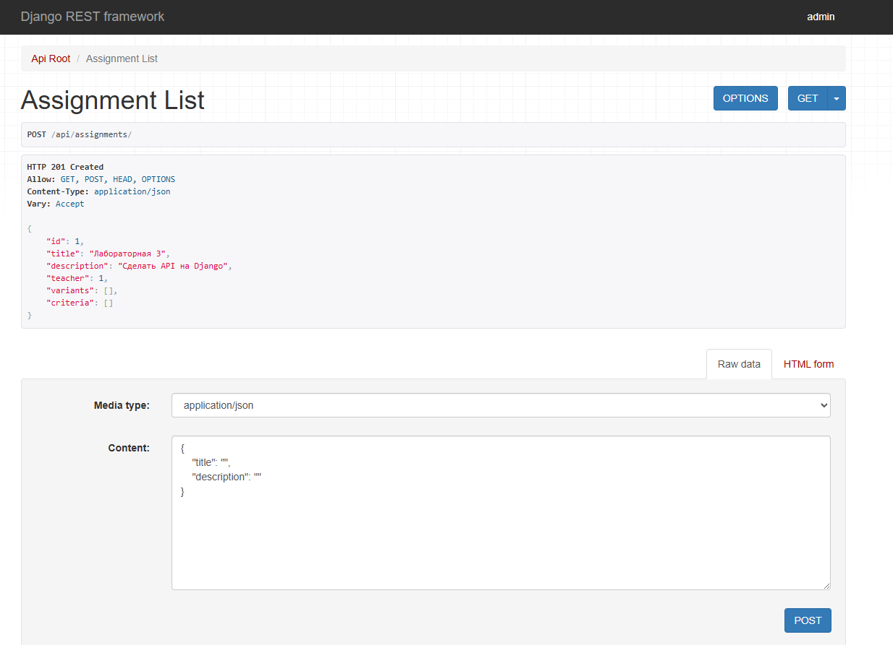
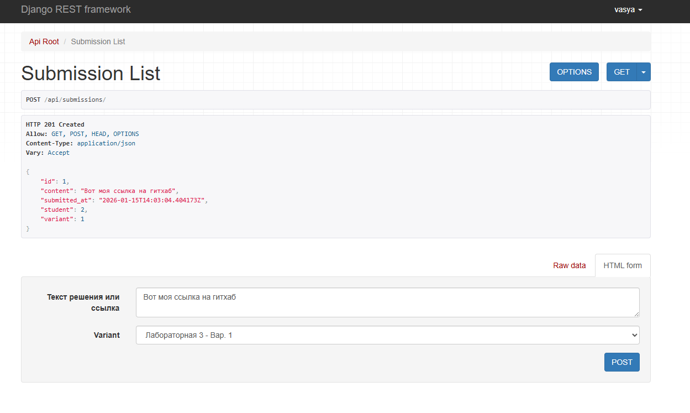
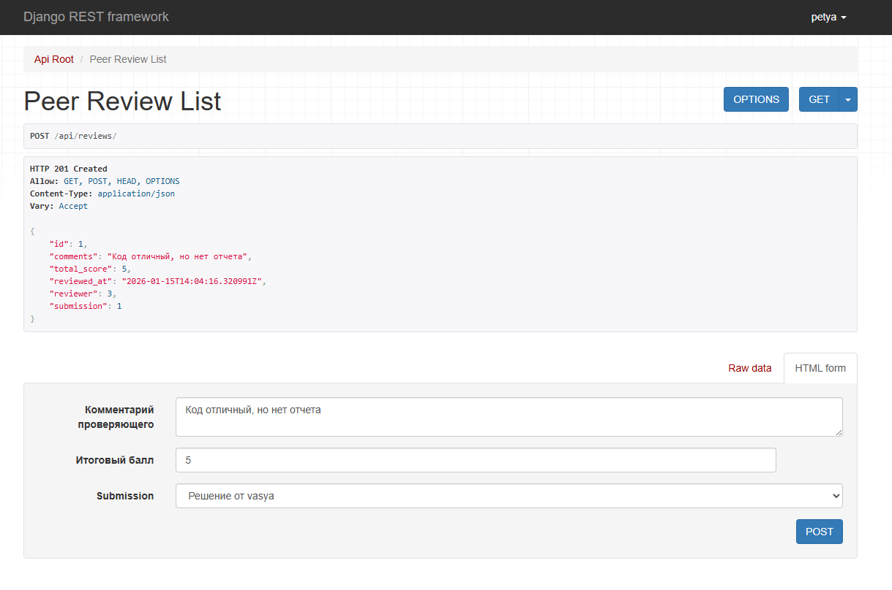

Отчет по лабораторной работе №3
Реализация REST API на Django
Выполнил: Студент группы К3341 Дущенко Даниил Александрович
Цель работы
Овладеть навыками создания веб-сервисов (API) с использованием Django REST Framework (DRF). Реализовать систему взаимного оценивания заданий (Peer Review), настроить авторизацию по токенам через библиотеку Djoser и задокументировать API.
Ход работы
1. Проектирование модели данных
Для реализации системы взаимной проверки были разработаны следующие сущности (Django Models): * Assignment (Задание): создается преподавателем, содержит описание и критерии. * Variant (Вариант): варианты выполнения задания. * Submission (Решение): ответ студента, привязанный к конкретному варианту. * PeerReview (Проверка): оценка решения другим студентом с комментарием и баллом.
2. Реализация сериализаторов и представлений
Использовался ModelViewSet из DRF для автоматической генерации CRUD-методов (GET, POST, PUT, DELETE).
Для преобразования данных моделей в JSON были написаны сериализаторы (ModelSerializer).
Настроены права доступа (Permissions): доступ к API имеют только авторизованные пользователи.
3. Тестирование API
Ниже представлены скриншоты работы API через веб-интерфейс DRF.
Сценарий 1: Преподаватель создает задание Пользователь с правами администратора отправляет POST-запрос на создание задания с вложенными критериями. 
Сценарий 2: Студент отправляет решение
Студент (vasya) выбирает вариант задания и отправляет ссылку на свою работу. Система автоматически фиксирует автора.

Сценарий 3: Взаимная проверка (Peer Review)
Другой студент (petya) оставляет рецензию на работу Васи, выставляя оценку и комментарий.

4. Настройка авторизации (Djoser)
Для аутентификации используется библиотека Djoser и стандартные токены DRF (TokenAuthentication).
В панели администратора видно, что для каждого пользователя сгенерирован уникальный токен доступа.

5. Документирование API
Для документирования эндпоинтов использовался инструмент MkDocs. Описание методов, форматов запросов и ответов вынесено в отдельный раздел документации сайта-отчета.
Вывод
В ходе лабораторной работы был разработан RESTful сервис для образовательной платформы. * Реализована логика работы с заданиями и проверками через Django REST Framework. * Настроена аутентификация по токенам с использованием Djoser. * API протестировано и задокументировано. * Получены навыки работы с сериализацией данных и вложенными структурами JSON.